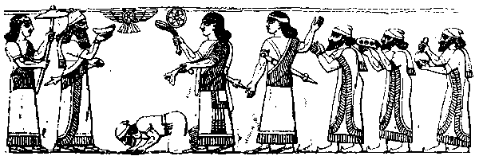

Israel’s national vocation “My people are destroyed for lack of knowledge” (v6). They are His people, specially chosen to serve Him, but ignorant of the fact. “If ye will obey My voice indeed, and keep My covenant, then ye shall be a peculiar treasure unto Me above all people: for all the earth is Mine: and ye shall be unto Me a kingdom of priests, and an holy nation” (Exodus 19:5–6). “For thou art an holy people unto the LORD thy God: the LORD hath chosen thee to be a special people unto Himself, above all people that are upon the face of the earth” (Deuteronomy 7:6, 14:2). “Obey My voice, and do ... all which I command you: so shall ye be My people, and I will be your God” (Jeremiah 11:4). But Israel broke the Covenant; they did not know who they were; they had no sense of national vocation.
“Though thou, Israel, play the harlot, yet let not Judah offend” (v15). ISRAEL was divorced, JUDAH was not. Both would go into captivity: Israel into Assyria 735–670 BC from which she never returned, Judah into Babylon 604–585 BC from which a remnant returned 70 years later, in 534 BC. But in the last days the divorced wife would inherit the unconditional promises made to Abraham, Isaac, Jacob, Joseph and Ephraim, and in the lands of her dispersion she would come to Christ. “I am sought of them that asked not for Me; I am found of them that sought Me not. I said, Behold Me, Behold Me, unto a nation that was not called by My name” (Isaiah 65:1).
Israel a multitude of nations “Ephraim is joined to idols: let him alone” (v17). But in the last days Ephraim shall become a multitude [ àwìî¸ melo = fulness] of nations [ íéÈà goyim = gentiles] (Genesis 49:1, 48:19, cf Romans 11:25) in the isles of the sea (Isaiah 40:15, 41:1, 5, 42:4, 10, 12, 49:1 etc). “Hear the word of the LORD, O ye nations, and declare it in the isles afar off, and say, He that scattered Israel will gather him, and keep him” (Jeremiah 31:10, 33). So Israel would be brought into the New Covenant and remarried to Christ (Hebrews 8:10). Note: In Romans 11:25 Jewish translators of the New Testament render the Greek plhrwma twn ’eqnwn, ”the fulness of the gentiles”, into Hebrew as íéÈÃä⇐ àwìî¸ —exactly the same phrase as used for “multitude of nations” in Genesis 48:19.
“Sing, O barren, thou that didst not bear; break forth into singing, and cry aloud, thou that didst not travail with child: for more are the children of the desolate [exiled Israel] than the children of the married wife [Judah] ... . For thou shalt break forth on the right hand and on the left; and thy seed shall inherit the Gentiles ... . For thou shalt forget the shame of thy youth, and shalt not remember the reproach of thy widowhood any more. For thy Maker is thine husband; the LORD of hosts is his name; and thy Redeemer the Holy One of Israel; the God of the whole earth” (Isaiah 54:1–5).
Where did Israel go? A black alabaster obelisk in the British Museum depicts the Assyrian king Shalmaneser III (858–824 BC) receiving tribute from Jehu of Israel:

Tribute of Jaua of Bit-Humri: Silver, gold, a golden bowl, golden goblets, a golden beaker, pitchers of gold, lead, sceptres for the king, and balsam-wood I received from him.The Assyrians called Israel Bit-Humri, House of Omri, after one of Israel’s most powerful kings—hence Khumri or Cymry (as Wales is called). The Phoenicians called them Beth-Sakai, House of Isaac—hence Sacae, or Saxons. Many such names indicate where “lost” Israel went.
Next chapter | back to Contents | back to Introduction and Map